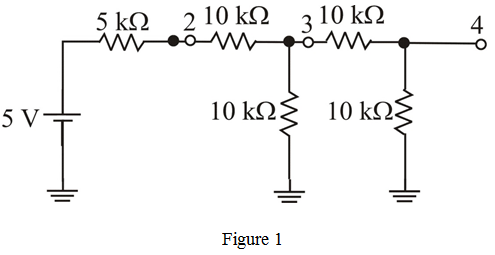
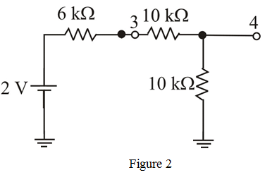
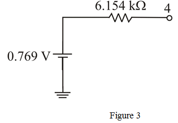
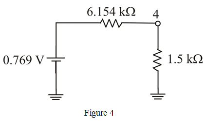

Refer to Figure P1.15 in the textbook.
Application of Thevenin theorem at node 2:
Calculate the Thevenin resistance at node 2.
Calculate the Thevenin voltage at node 2.
Draw the Thevenin equivalent circuit up to node 2.

Application of Thevenin theorem at node 3:
Calculate the Thevenin resistance at node 3.
Calculate the Thevenin voltage at node 3.
Draw the Thevenin equivalent circuit up to node 3.

Application of Thevenin theorem at node 4:
Calculate the Thevenin resistance at node 4.
Calculate the Thevenin voltage at node 4.

If a load resistance of is connected between node 4 and ground.
Draw the modified circuit with load resistor.

Calculate the load current.
Therefore, the current that flows through the load resistance is